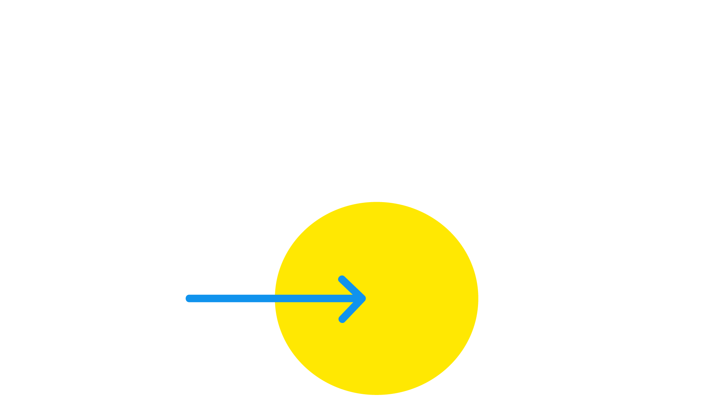

BLIV FRIVILLIG
Unge Ravne er Natteravnenes ungdomsindsats. De frivillige i Unge Ravne er unge mellem 20-30 år, der brænder for at gøre en forskel for andre unge ved at skabe tryghed i nattelivet.
FORDELE SOM UNG RAVN
Som frivillig hos Ung Ravn optjener du point, hver gang du giver en hånd med fra små opgaver til store events. Dine point kan bruges på fede rewards som McDonald’s-vouchers, drinksbilletter, fri adgang til baren, rabatter på events, biografture og meget mere.
KONTAKT
Projektleder i Unge Ravne
Celina L. H. Kramer